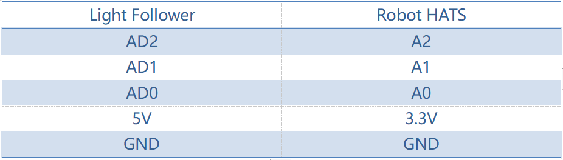

ライトフォロワー¶
動作原理¶
ライトフォロアモジュールは周囲の光源を検出し、データをプロセッサに転送する。プロセッサはデータを分析し、光源の方向を見つけるため、前輪と後輪の動きを制御してリソースにアプローチするコマンドを送信する。
手順¶
ステップ1 組み立て
**M3*10ネジ**と**M3ナット**を使用してライトフォロアをセンサーコネクタに接続し、2つの**M3*10ネジ**と2つの**M3ナット**を使ってそれらを車に組み立てる。指でナットを下に持ってください。
ステップ2 配線
以下に示すように、5ピンのアンチリバースケーブルでライトフォロアをロボットHATSに接続する。
注釈
なぜ5Vを3.3に接続するのか質問を持っているかもしれない。さて、ライトフォロア上のSTM8チップの動作電圧は2.7-5.5Vなので、ここで3.3Vに接続できる。5Vを5Vに**接続しない**でください！Robot HATSのすべてのアナログポートは3.3Vで動作するPCA8591から導かれる。したがって、電圧が3.3V〜5Vの場合、出力値は常に255になるため、5Aに接続するとPCA8591が損傷する恐れがある。必ず**3.3V**に接続してください。
配線は次の通りである：

ステップ3 テスト
まずライトフォロワーをテストしよう。
cd ~/SunFounder_PiCar-S/example/
python3 test_light_module.py
フォトトランジスタを懐中電灯の光点に当てる。光量を増やすと、より多くのLEDが点灯し、出力値が減少する。
ここで、青色の調整可能な抵抗器を回転させて、同じ光の輝度で値を変更できる。最良のステータスは次のとおりである：
LEDが1つしか点灯していない場合、出力値は255である。
ライトが最も明るく、すべてのLEDが点灯する場合、出力値は約10〜25である。
ステップ4 旅に出よう！
python3 light_follower.py
上記のコードを実行すると、車は次の light followingモードに入る。円を描くように右に曲がり続け、さまざまな方向の光の状態に関する情報を収集する。車をより広い場所に置いて待ってください。
補正が完了すると、車は一時停止する。ライトフォロアモジュールの電灯を照らすと、車は移動するときにライトスポットに追従する。
－ light_follower.pyのコードの説明¶
ワークフロー全体
環境の光条件が複雑なので、感光センサーは実際に使用する前に補正する必要がある。環境光の輝度の情報を収集する。光源が周囲より明るい場合のみ、車は光に追従できる。

ここでは、補正後のライトとメインプログラム内のライトフォローを含む2つの主要な関数/モジュールを書き込む。
ライトフォロア補正機能のサブフロー
3つの感光性コンポーネントを個別に構成する必要があるため、何回に収集されたA0、A1、とA2に値を保存する3つのリストを設定する。次に、最も明るい条件での出力アナログ値である最小値を選ぶ。
使用する光源は環境光よりもはるかに明るいため、最も明るい条件での出力値を参照として使用してください。
さらに、しきい値を設定する必要がある-収集された光源の値と環境の値のギャップがしきい値を超えた場合、値を0または1に設定する。ここでは、[0,0,0]を使用して、トリガーされていないときの3つのフォトレジスターのステータスを表す。対応するフォトレジスタの検出値がしきい値よりも高い場合、「0」は「1」になる。したがって、3つの要素のリストに従って車の関連アクションを設定できる。
光が検出された場合、車は動き、それに追跡する。光が検出されない場合、車は一時的に停止し、旋回を続けて円を検出する。
ライトフォロアー機能のサブフロー
ライトフォロワーには3つのフォトトランジスターが含まれるため、そのステータスリストは8つのステータスを表す3つの要素で構成される（順列と組み合わせに基づく）。ここでは、これらのステータスに関連する応答を設定する必要がある。
3つの要素は3つのプローブのステータスを示す：1は検出された光を表し、0は検出されなかったことを表す。たとえば、[1,0,0]は光が左側のプローブによってのみ検出されることを示し、つまり、光源が車の左側にあり、車の応答アクションを左折として設定する。 [1,1,0]は光が左側と中央のプローブで検出されることを意味するため、その応答アクションも左折に設定する必要がある。対応するステータスに従って同様に右折するように設定する。光が検出されない場合、ステータスは[0,0,0]であるため、応答アクションを停止してスタンバイモードに戻るように設定する。
ここでは、大角度と小角度の回転を区別するために、別の変数（ステアリング角度）を設定してください。ライトが左側の中心にある場合（ステータス[1,1,0]）、小角度の回転を適用する必要がある。ライトが左側の端にある場合（ステータス[1,0,0]）、大きな角度の回転を適用する。
機能説明
コードを理解するには、上記のソフトウェアサブフローを参考にしてください。
以前にインポートされた**light_follower_module**、front_wheels、と**back_wheel**を含む3つのPythonモジュールがコードに使われる。これらはこのキットのドライバーであり、それぞれライトフォロー、前輪と後輪となっている。
関連クラスはここで定義されている。モジュールを適用して使用すると、関連するクラスのオブジェクトが作成され、ハードウェアのさまざまな部分がクラスオブジェクトによる関数を呼び出すことによって駆動される。
たとえば、ライトフォローモジュールの場合、**lf**という名前のオブジェクトを作成する：
lf = Light_Follower.Light_Follower()
それからクラスオブジェクトによって関数を呼び出す。
A0 = lf.read_analog()[0]
この関数**read_analog() は、3つのプローブの検出されたアナログ値を保存する3つの要素のリストを返す。ここでは、**A0 = lf.read_analog()[0],** A1 = lf.read_analog()[1]**と**A2 = lf.read_analog()[2]**を使用して、戻り値の3つの要素を変数A0-A2に個別に保存する 。
ここでは**for()**ループを10回使用する。つまり、補正モードで車が円を描くように走行すると、車はアナログ値を10回取得する。ここでは、最小値を参考している。より多くのサンプルが必要な場合は、ループの回数を増やしてください。
env0_list.append(A0)**関数によって、検出された値を各ループのリストに保存する。ループが終了すると、Pythonの組み込みリスト関数**reference[0] = min(env0_list) がリストの最小値を選ぶ。
lt_status_now = lf.read_flashlight()
この目的は3要素のリストを返すモジュールのステータスを読み取ることである。この機能は輝度が調節可能な懐中電灯によって引き起こされる問題を解決するために使用される。PWM方式による輝度変化で繰り返し点滅するので、この機能をドライバーライブラリーに追加し、光源が急に消灯したり、ON/OFFの比率で輝度が変化したりしても、車が何度も動いたり止まったりしないようにする。
fw.turn(turning_angle)
前輪ステアリング機能。前輪がステアリングに適用されている場合、メインプログラムはこの関数を呼び出す。パラメータは回転角度となっている。
bw.forward()
bw.set_speed(forward_speed)
後輪には2つの機能が必要である。最初の関数は回転方向を順方向に制御する（逆方向の関数は**bw.backward()**である）。2つ目は車輪の回転速度を設定すること。パラメータは速度の値である（範囲：0-100）。パラメータが大きければ大きいほど、ホイールの回転が速くなる。